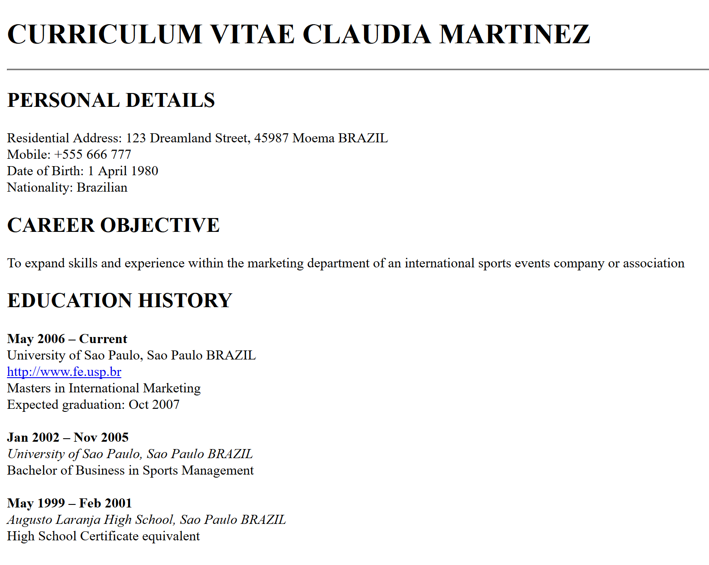
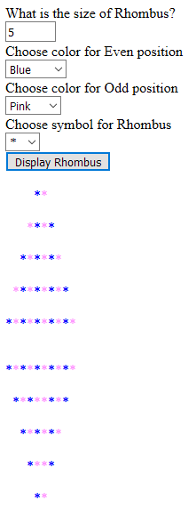
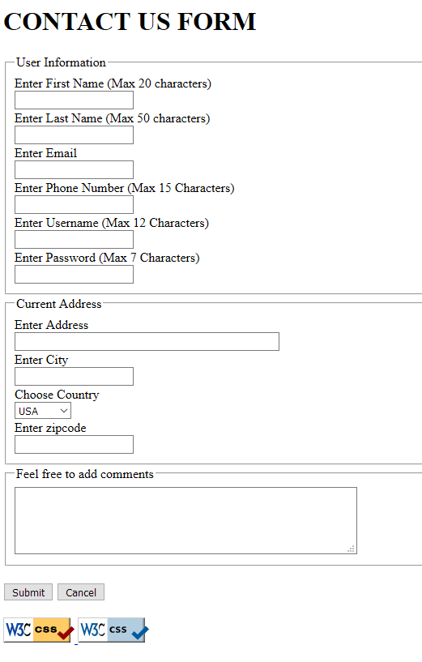
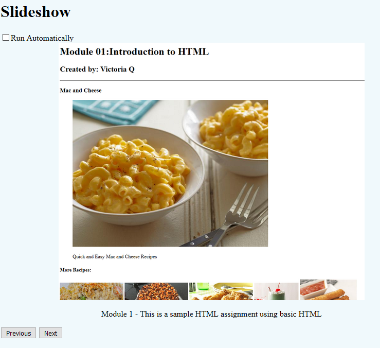

Artifact 1 - Resume
Artifact 1
This artifact uses HTML to create a resume and format it in a way where it shows different headings, lists and other informations. It uses headings, lists, links, images, and text styles.
Artifact 2 - Chessboard

Artifact 2
This artifact uses HTML and CSS to create a chessboard. CSS is used to create the different colored boxes and then HTML is used to group them together on the page.
Artifact 3 - Create a Rhombus (Diamond) Using Javascript
Artifact 3
This artifact uses HTML, CSS, and Javascript to create a rhombus. It uses HTML to ask the users to choose the symbol and colors they want the rhombus to be and then uses if loops in Java to create the rhombus patterns.
Artifact 4 - Validate Contact Us Form Using Javascript
Artifact 4
This artifact uses HTML and Javascript to collect users information typed in and validate it. It uses HTML to ask the user to input their information. Then it uses Java to check what the user inputed to a set of specification. If everything is inputed correct, a "Thank You" page will load. If it inputs are incorrect, an error message will display.
Artifact 5 - Create a Slideshow Using Javascript
Artifact 5